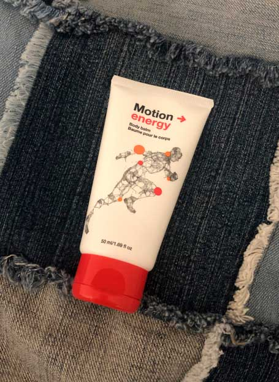
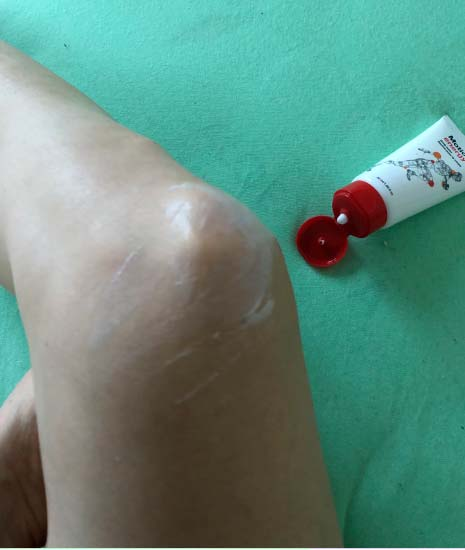
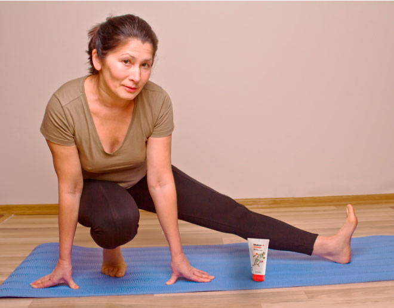
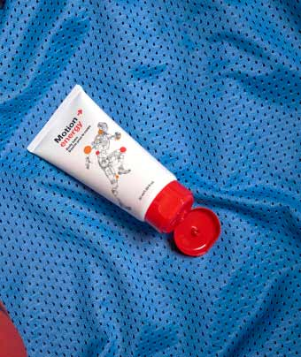

Как да се справим с болките в гърба при работа на бюро? Съвет от счетоводител с повече от 20 години опит
 Мая Райкова, 48: счетоводител,
Мая Райкова, 48: счетоводител, финансов експерт, блогър
1 209 гледания 373
Здравейте на всички! 
Когато бях малка, майка ми казваше:
"Учи се добре, Мая, иначе ще бъдеш като мен - цял живот ще се прегърбваш от работа."
Целият и живот бе минал през тежката работа в земеделието.
Но работата в офиса не е по-лесна от тази на полето с мотика. Когато сте млади, можете
да прекарвате по 8-12 часа пред компютъра. Но постепенно часовете стават дни, а дните – години
... И когато направих 40, вратът ми започна да изтръпва от заседналата работа, получих
хронична болка в кръста. 
Пиех болкоуспокояващи и се мажех с диклофенак на проблемните места, ходех на работа, но в един момент хапчетата и мехлемът спряха да действат.
След обстойни прегледи, лекарят постави диагноза „фибромиалгия“, откриха хернии и шипове. Предписаха ми лечение и терапевтични масажи: 3-4 курса по 10-15 сесии годишно. Процедурата беше скъпа дори при моята заплата, а и нямам свободно време за това. Направих 2 курса и се отказах.
Обсъждайки проблемите със здравето, сина ми каза: „Мамо, не губи време! Пробвай този гел, той ще те загрее - след две седмици ще се почувстваш по-добре!“ - и ми даде малка тубичка.
Синът ми каза, че болките в гърба му са изчезнали за един месец с този гел. Той е програмист - имаше проблеми с гърба и ставите, но сега носи внука ми на ръце навсякъде!
Когато се прибрах у дома, прочетох инструкциите. Трябваше само да нанасям гела върху
засегнатите зони сутрин и вечер, оставяйки го, докато се абсорбира напълно. Препоръчително бе да
се правят прости упражнения, като предварително се нанесе гелът върху проблемните зони. 
Гелът се нанася върху кожата с леки масажни движения. Бързо се абсорбира, не оставя следи по дрехите и чаршафите.
Според инструкциите лечебният ефект се постига благодарение на балансиран и внимателно
подбран състав. Основните активни съставки на гела са етерични масла от евкалипт, розмарин,
канела, екстракт от джинджифил и евкалиптови листа. Формулата има затоплящо,
противовъзпалително, аналгетично и възстановяващо действие. С редовното използване на гела
започва естествената регенерация на увредените тъкани и намалява рискът от нараняване,
включително по време на упражнения. Евкалиптът в гела осигурява приятен затоплящ ефект,
увеличава кръвообращението, подобрява подвижността и регенерацията на тъканите. По отношение на
ефективността гелът е несравним с което и да е известно аптечно лекарство, което съдържа
синтетични вещества. Това е 100% органичен продукт, който няма противопоказания или странични
ефекти. 
Проблемът ми бе локализиран - хронични болки в кръста и врата. Ето защо нанасях гела върху тези зони всяка вечер или при обостряне на проблема. Веднага забелязах ефекта. След първата употреба приятна топлина се разнесе по тялото ми и болката изчезна за минути. Усещания след процедурата: все едно не съм седнала пред компютъра в офиса, а цял ден съм лежала на меко пухено легло. Такова леко усещане в цялото ми тяло! Това определено е по-добре от болезнен и скъп масаж или парещи мехлеми от аптеката!
Друг път пък, вратът ме заболя по средата на работния ден. Знаейки, че това може да се случи, си носех тубичката с гел в чантата. Още в офиса нанесох гела на врата си и 5 минути по-късно забравих за неприятните усещания. Мога да мина без болкоуспокояващи през целия ден и цялата нощ след тази терапия. И болката не ме притеснява по време на сън, а преди не можех да спя без специална възглавница под кръста.
Седмица по-късно гърбът и вратът ми спряха да ме болят. За първи път през последните 5 години! Много щастлива, се обадих на сина си с благодарности. И той ме посъветва винаги да държа тубичка с гела под ръка, защото никога не се знае. Помага и при наранявания и навяхвания. И като цяло тези, които работят седнали дълго време, винаги трябва да имат този гел.
Поръчах гела тук . Нарича се . Цената е
много приятна при 50% отстъпка - приблизително колкото 1 масажна сесия с хиропрактор. И като се
има предвид, че гелът е универсален и има кумулативен ефект, ползата е очевидна. 
Сега имам страхотно лекарство за болки в гърба и мускулите вкъщи. Всяка вечер преди лягане нанасям гела върху кръста и врата си, а няколко минути по-късно се радвам на приятна и лека топлина. Гръбнакът ми е щастлив, мускулите на врата ми са отпуснати и вече не ме болят, дори и да работя до късно в офиса.
Наскоро най-малката ми дъщеря нарани коляното си по време на тренировка. Дадох ѝ гела и ѝ казах как да го използва. Два дни по-късно тя вече беше забравила за контузията, но все пак се опита да не натоварва крака си прекалено много. Оказва се, че този гел се използва дори от професионални спортисти за тренировки, загряване на мускулите, намаляване на риска от наранявания и възстановяване от травми.
Така че, ако имате болки в гърба или врата след работа, препоръчвам да използвате . Мускулите и гръбначният стълб стават идеално отпуснати, болката и болезнените усещания изчезват и поради затоплящия ефект се подобряват кръвообращението и подвижността. Това означава, че древните методи за локализиран ефект на затопляне наистина работят! Давам на това брилянтно изобретение 5 звезди от 5.
Между другото, специалната оферта за все още е валидна. Така че, по-добре побързайте - здравето е по-важно от богатството!
И традиционното нещо за блогъри - харесайте, споделете и се абонирайте за моя канал. Бъдете здрави!
Супер! Това ми трябва след работа!
0 Отговор | ХаресвамГотин гел ! Чудесен вариант като локален продукт за загряване вечер. Работя в склад, гърбът ми също страда от много натоварване. Затова преди лягане винаги нанасям гела върху кръста. 10 минути - и гърбът ми е като нов!
Аз си купих този гел преди шест месеца и не съжалявам! Мажа с него коленете и ханша - помага много при болки в ставите.
9 Отговор | ХаресвамЧувала съм, че този гел може да се използва преди тренировка, но все пак се колебаех дали да го купя. Благодаря за промоционалния линк!
0 Отговор | ХаресвамТърся нещо, точно такова :)
0 Отговор | ХаресвамОбичам да играя волейбол, но китката винаги ме боли няколко дни след това. Проблемът беше решен много бързо с този гел !
 18 Отговор | ХаресвамЧудя се дали не се затопля твърде много, не гори ли?
0 Отговор | ХаресвамНе, за разлика от лекарствата от аптеката, които парят ужасно и оставят изгаряния, дава мека и приятна топлина, която облекчава болката и възпалението. По отношение на интензивността може да се сравни със затоплящия компрес, който майка ми слагаше върху възпаленото ми гърло, когато бях дете.
5 Отговор | ХаресвамПреди си мислех, че това е измама. Но, когато баща ми излекува ишиаса си за 2 месеца, повярвах. Започнах да използвам този гел преди упражнения и след тежки тренировки.
Мисля, че трябва да го купя. Наистина седим твърде много. Нашите мускули не са адаптирани към този начин на живот.
3 Отговор | Харесвам